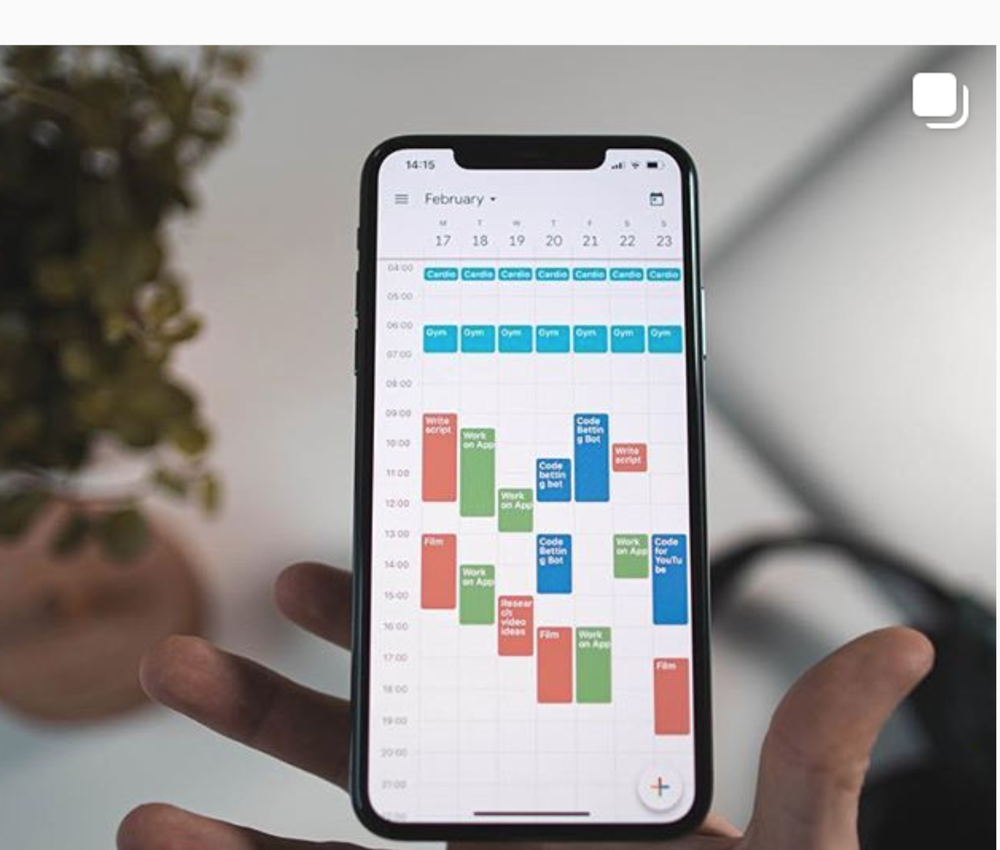
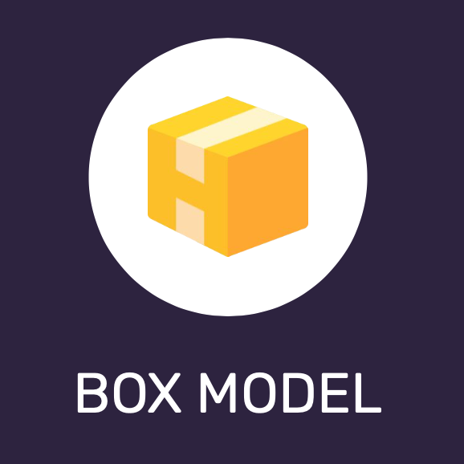
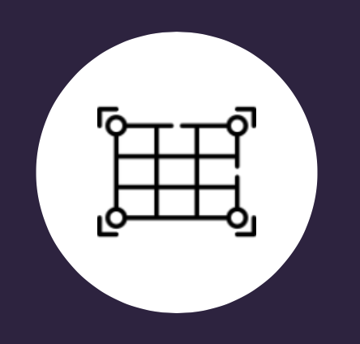

Po co?
- Bo słyszałem, że to trudne w dzisiejszych czasach, a ja lubię wyzwania.
- Bo pozwala realizować swoją ciekawość i swoje projekty.
- Bo pozwala tworzyć coś namacalnego.
- Bo ciągle się trzeba uczyć i rozwijać.
- Bo zarobki są podobno spoko. Więcej pieniędzy można lepiej wykorzystać.
10.08.2020 Organizacja pracy jak skrzyżowanie w Tokio
Jira. Lubię praktyczność, a skoro większość zespołów deweloperski w pracy
korzysta i szczerze nienawidzi Jiry to
dlaczego sam nie miałbym organizować prywatnej nauki i pracy w tym systemie. 2 pieczenie na jednym
ogniu. Lubię
to 👍.
11.08.2020 Nie mój kalendarz
poniżej dodaje zdjęcie, które nie jest moje, ale inspiruje, żeby dobrze
ogarniać sobie dzień. Tylko,
żeby się nie zamienić w American Psycho. elastycznie i na lu(d)zie to podstawa.

12.08.2020 To zależy.

czasami ma się więcej czasu, czasami mniej. W drugim przypadku trzeba
świadomie wiedzieć ile realnie jestem w stanie zrobić. btw. ten article będzie
potraktowany tajemną techniką box-model. Fell the fear! 👀

13.08.2020 Lubiem ciasto - 3 sztuki poproszę.
class \ and Keep it stupid simple
15.08.2020 planowanie planów i planów robienie + priorytet
Kurwix - kluczowe jest pisanie kodu. Po prostu praktyka i
praktyka. to jest najważniejsze!
Chyba czas rzucić wyzwanie - codziennie pisanie
kodu. W praktyce. :D We krwi!
Mogę i zrobię
Mogę dużo, zrobię to co chcę. Będzie fajnie.